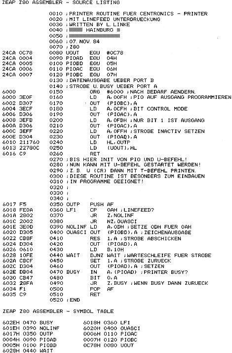

80-Bus Journal |
Okt./Nov./Dezember 1984 · Ausgabe 4 |
Mehrfach wurde von Lesern eine Printroutine für EPSON Drucker gewünscht. Luzian Linke hat nun gleich drei kleine Programme eingesandt, um möglichst alle „Druckerwünsche“ zu befriedigen.
Günter Böhm
Nachdem ich Jörg Wittichs Pheas ohne Interrupts ausprobiert hatte, bekam ich rote Ohren: das Laden von 30K Speicher auf Diskette flutschte wirklich in Sekundenschnelle. Also war unser Skew-Faktor doch falsch gewählt? Schnell habe ich aber herausgefunden, daß auch Disketten, deren Sektoren sequentiell in der Reihenfolge 1,2,3 usw. formatiert waren, von unserem EMDOS auch nicht schneller gelesen werden konnten. So mußte das PHEAS noch eine andere Bremse enthalten. Ein Vergleich mit dem PHEAS von Jörg und das Nachschlagen in den Datenblättern gaben schnell Aufschluß: die Controller Kommandos, die ich damals ungeprüft übernommen hatte, bewirkten alle (wegen eines einzigen unnötig gesetzten Bits) eine Verzögerung von 15 ms. Zudem verträgt das Laufwerk wirklich eine schnellere Steprate. Schnell wurden alle Befehle zum Test mit dem Modify folgendermaßen geändert:
FHOME #01 FSEEK #19 FREAD #80 FWRITE #A0 FWRTRK #F0 FRDTRK #E0
Und wirklich konnte EMDOS nun mehr als doppelt so schnell lesen und schreiben. Nur FORMAT und READTRK zeigten keinen Geschwindigkeitsgewinn; hier sind die Rechenzeiten zu groß, um einen Sektor direkt nach dem vorhergehenden einzulesen.
Nach dieser positiven Erfahrung habe ich mich darangemacht, alle Programme auf DISK0 entsprechend zu verändern.
WBOOT habe ich dann noch etwas weitgehender ausgemistet. Hier wird unnötigerweise ein neuer Interruptvektor gesetzt. Die Delays sind auch nicht notwendig, da nach dem Coldboot die Diskette ja schon läuft. Beim
| Seite 26 von 52 |
|---|